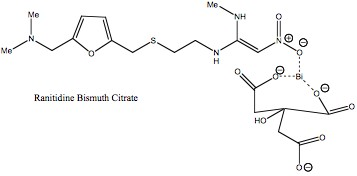

Bismuth is used to treat a range of ailments. Most commonly, bismuth is used to help protect against gastric ulcers, as well as hydration therapies for young children suffering from severe diarrhea. Although bismuth has been shown to be exceedingly useful in these capacities it has also been blamed for encephalopathy in adults.
Medicinal Uses
Bismuth Subsalicylate
Reactive Oxygen Species (ROS) such as sodium hydroxide and other caustic agents such as hydrochloric acid and ethanol have been shown to cause gastric lesions and injuries (1). It is not known whether these injuries are directly caused by these harsh substances or if they retard the repair system in gastric mucosal cells (2). The active ingredient in Pepto-BismolTM, Bismuth subsalicylate, has been shown to scavenge Reactive Oxygen Species and other caustic agents by decreasing damage to gastric mucosal cells (2). A study by Bagchi et al. suggested that the subsalicylate functioned as a buffer against the pH fluctuation caused by hydrochloric acid and sodium hydroxide. However, in another study bismuth is hypothesized to act as a binding factor in mucous thus making the mucous thicker and more effective at shielding the gastric lining from oxidative damage (3).

Bismuth-mediated Hydration Therapies
Diarrhea kills five to ten million people annually worldwide (4). Children are the hardest hit by diarrhea for they account for 4.6 million deaths per year (4). Recently in an issue of the New England Journal of Medicine, Figueroa et al. reported that Bismuth Subsalicylate can be used as an agent for rehydration therapy for infants suffering from diarrhea. The group found that there was a statistically significant retention of water and decrease of watery stool (5). The mechanism of action is thought to be an antisecretory function against bacteria (6).
Ranitidine Bismuth Citrate
Helicobactor pylori has been indentified as a leading cause of gastric ulcer disease. Ranitidine bismuth citrate is administered in order to combat the bacteria. Ranitidine has been linked to the non-competitive inhibition of Phospholipase A2 in Helicobactor Pylori. The inhibition of this enzyme, which lyses endothelial cells in the stomach by cleaving phospholipids, prevents ulcer formation (7). Bismuth further prevents ulcer formation by binding mucous together and by inhibiting pepsin activity (7).

Adverse Side Effects
Encephalopathy
In the 1970’s and 1980’s there was a high incidence of encephalopathy traced to high levels of ingested bismuth. Those affected suffered from headaches and eventually experienced difficulties walking and standing (8). These cases were due to exceptionally high oral doses of Bismuth Subsalicylate administered to these patients. These cases led to the heavy policing of bismuth containing medicines in Australia and other countries (9). Although the mechanism of bismuth toxicity is not fully understood, it has been linked to its changes and alterations of neurons in the brain (10).
Bismuth Antidiarrheal Side Effects
With regard to the usage of bismuth as an antidiarrheal, the problems are two fold. Reye’s Syndrome is characterized by symptoms ranging from mood irritability to coma and even death. Although the cause and cure of this syndrome are unknown, a link between salicylic acids has been made. This has been supported by epidemiological studies correlating aspirin usage and Reye’s Syndrome. Correspondence to Figeueroa et al in the New England Journal of Medicine concerning their article brought up this important public health point. It is known that children have higher uptake of nutrients in general. Specifically, children also have an elevation in metal uptake versus that of adults (11). Based on this knowledge it can be concluded that children would have an increased risk for elevated levels of Bismuth in the body. This can potentially lead to encephalopathy which would certainly lead to other developmental problems.
Conclusion
Bismuth is certainly a cheap and effective way to treat gastric ulcers and to replenish water lost during diarrhea. However, if excessive amounts of bismuth are introduced into the body serious and potentially deadly side effects can occur. For this reason, patients should be vigilant about the warning signs of Bismuth toxicity and may want to talk with their doctor before adding any Bismuth containing products to their medicine regiment.
Resources
Worldwide Information about Diarrhea –World Health Organization
Chemical Information for Bismuth
References
(1) van der Vliet, A., Bast, A. Role of reactive oxygen species in intestinal diseases. Free Radical Biol. Med. 12, 499-513 (1992).
(2) Bagchi, D et al. Mechanism of Gastroprotection by Bismuth Subsalicylate Against Chemically Induced Oxidative Stress in Cultured Human Gastric Mucosal Cells. Dig .Dis. and Sci. 44, 12, 2419-2428 (1999).
(3) Tanaka, S., Guth, P. H., Carryl, O. R., Kaunitz, J. D. Cytoprotective effect of bismuth subsalicylate in indomethacin-treated rats is associated with enhanced mucus bismuth concentration. Aliment. Pharm. and Ther. 11, 3, 605-612 (2003).
(4) Braun, S., Manhart, M., Balm, T., Bismuth Subsalicylate in the Treatment of Acute Diarrhea in Children: A Clinical Study, Pediatrics, 87, 18-27 (1991).
(5) Figueroa-Quintanilla D, Salazar-Lindo E, Sack RB, et al. A controlled trial of bismuth subsalicylate in infants with acute watery diarrheal disease. N. Engl. J. Med. 328, 1653-1658 (1993).
(6) Ericsson CD, Evans DG. Bismuth subsalicylate inhibits actrivity of crude toxin of Escherichia coli and Vibrio chloerae. J. Infect. Dis. 136, 693-696 (1977).
(7) Ottlecz, A.; Romero, J. J.; Lichtenberger, L. M. Effect of ranitidine bismuth citrate on the phospholipase A2 activity of Naja naja venom and Helicobacter pylori: a biochemical analysis. Alim. Pharm. and Ther. 13, 7, 875-881 (1999).
(8) Bruinink, A.; Reiser, P.; Mueller, M.; Gaehwiler, B. H.; Zbinden, G. Neurotoxic effects of bismuth in vitro. Tox. in Vitro 6, 4, 285-293 (1992).
(9) Gordon M F; Abrams R I; Rubin D B; Barr W B; Correa D D Bismuth subsalicylate toxicity as a cause of prolonged encephalopathy with myoclonus. Move. Dis. 10, 2, 220-222 (1995).
(10) Abramson, J et al. Bismuth in Infants with Watery Diarrhea
N. Engl. J. Med. 329, 1742-1743 (1993).
(11) Patriarca, M.; Menditto, A.; Rossi, B.; Lyon, T. D. B.; Fell, G. S. Environmental exposure to metals of newborns, infants and young children. Micro. Journal 67, 351-361 (2000).
Author: James East
- Alzheimer's 1 2
- Antibiotics
- Antifouling Paint
- Arthritis
- Ayurvedic Medicine
- Breast Feeding
- Cancer Therapy
- Cattle Feed
- Cerebral Ischemia
- Chelation Therapy
- Chernobyl
- Chicken Feed
- Chocolate
- Cigarettes
- Coal 1 2
- Copper Mining
- Cremation
- Diabetes
- Electronic Waste
- Hat Making
- Hard Metal Disease
- Hybrid Cars
- Imaging 1 2 3 4
- Industrial Pollution
- Jewelry Allergy
- Lead Poisoning
- Lewisite
- Magnetic Particles
- Makeup
- Mountain Top Removal
- MRI Imaging
- Neurotoxicity
- Nuclear Power
- Nuclear Weapons
- Ouch Ouch Disease
- Peripheral Neuropathy
- PET Imaging
- Photodynamic Therapy
- Phytoremediation
- Pregnancy
- Radioactivity 1 2
- Seafood
- Sunscreens
- Tattoos
- Vaccines
- Wound Healing